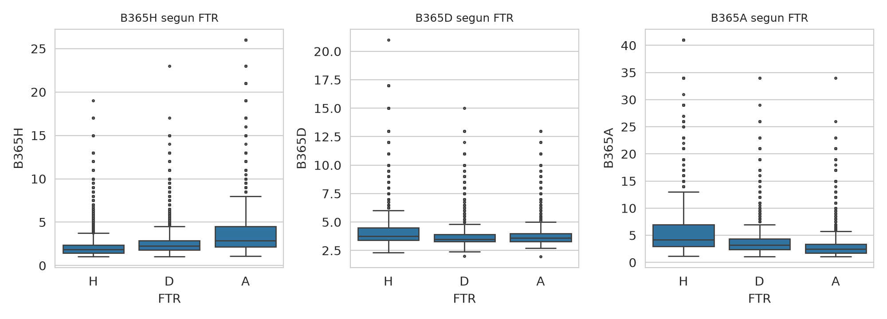
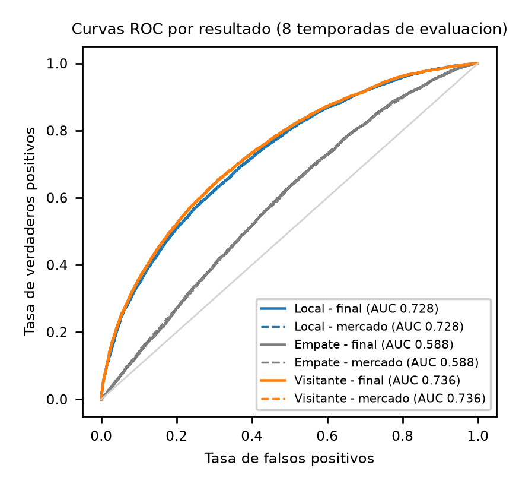
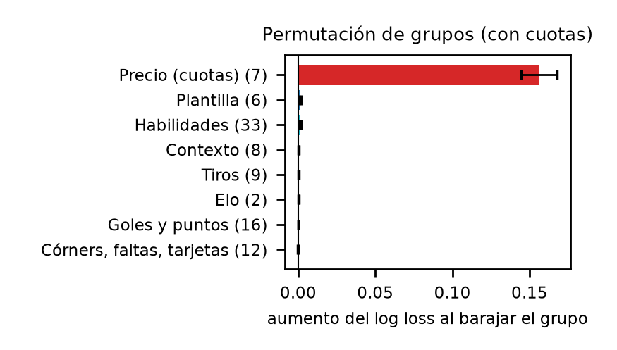
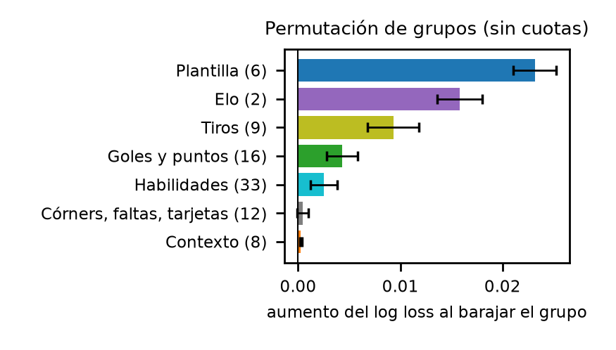

Predicción probabilística del resultado 1X2 en nueve ligas europeas (2014/15–2025/26): modelos, evaluación honesta y un resultado negativo bien medido.

| Decisión | Resultado |
|---|---|
| Cuotas → probabilidad | única transformación que importa |
| Escalado, NaN, asimetría, WOE | no mejoran |
| Margen de las casas | variable de tiempo (PSI 0.6–1.5): se descarta |
| Plantilla del once titular | sin ganancia frente al mejor once |
| Tiros a puerta (SOT10) | única que ayuda, y solo sin cuotas |
Log loss medio, 8 temporadas (menor es mejor). El eje empieza en 0.95 para hacer visibles las diferencias.

| Resultado | AUC |
|---|---|
| Local | 0.728 |
| Empate | 0.588 |
| Visitante | 0.736 |
| Macro | 0.684 (igual que el mercado) |


| Prueba | Resultado |
|---|---|
| Residuo del modelo sin cuotas | R² = −0.0007 |
| Apertura frente a cierre | 0.9640 → 0.9603; el cierre subsume a la apertura |
| Valor frente al cierre (CLV) | −0.12 pp |
| Backtest, modelo final (Pinnacle) | ROI −1.4 % (IC −6.3 % a +3.0 %) |
El +14.5 % con Bet365 sale de 233 apuestas con IC de ±38 puntos: no es evidencia de rentabilidad.
Código, notebooks 01–08 e informe en el repositorio público:
github.com/jcarlos-t/MLProject